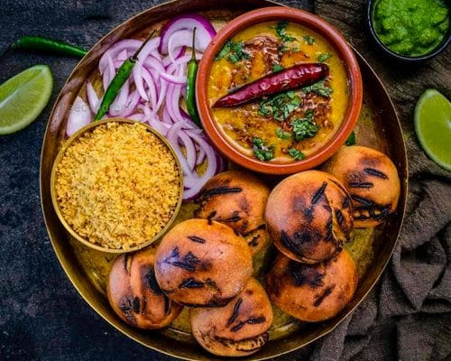
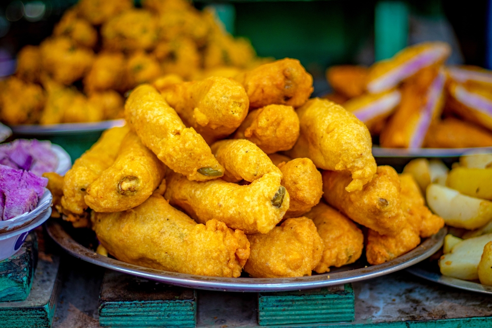
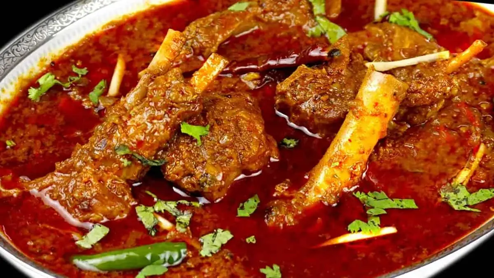

Rajasthani food is known for being spicy and rustic, featuring staple dishes like Dal Baati Churma (lentil, wheat rolls, and sweet crumble), Laal Maas (spicy meat curry), and Gatte ki Sabzi (gram flour dumplings in a yogurt curry). Other popular items include savory snacks like Mirchi Bada (chili fritters), Pyaaz Kachori (onion-filled pastries), and sweets like Ghevar (honeycomb-like dessert) and Mawa Kachori (sweet milk solid-filled pastries).



Popular Rajasthani snacks include savory items like Pyaaz Kachori, Mirchi Bada, Bikaneri Bhujia, and Mathri, known for their spicy and crispy textures. Sweet snacks and desserts such as Ghevar and Churma Ladoo are also a staple, while lentil-based snacks like Moong Dal Pakodi offer a wholesome alternative.


Rajasthani Laal Maas translates to Red Meat and is a traditional, fiery, and spicy mutton curry from Rajasthan, India, known for its deep red color and bold flavors. It's characterized by the use of a generous amount of spicy Mathania red chillies, yogurt, and fragrant spices like garlic, which gives the dish its signature vibrant hue and tangy taste. The meat, typically mutton, is slow-cooked in a rich gravy, often finished with a subtle smoky flavor from charcoal.
